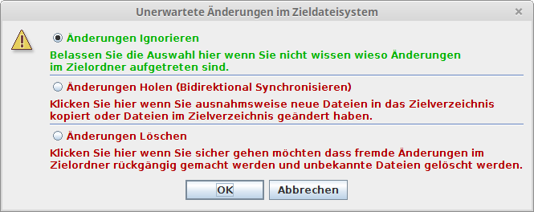
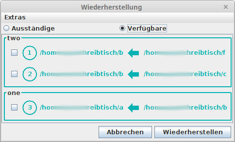

Diese Version ist eine Alpha Version; das bedeutet dass das Programm noch nicht sehr umfassend getestet und auf Fehler überprüft wurde.
Synchronisation von Dateien auf einen USB Stick (mit FAT32 Dateisystem): Der Dateiname darf keine Sonderzeichen enthalten und darf nicht zu lange sein.
Es treten Probleme auf wenn keine Schreibberechtigung im Zielordner besteht.
Es treten Probleme auf wenn der Quellordner Unterordner hat auf die nicht zugegriffen werden darf.
Manchmal tritt der Fehler auf dass beim Synchronisieren auf einen USB Stick das Modifikationsdatum der kopierten Datei im Ziel um eine Sekunde jünger wird.
Fssync steht als Abkürzung für "Filesystem Synchronisator". Das Programm erstellt Sicherheitskopien von Dateien und überprüft Dateien auf ihre Integrität. Dieser Prozess läuft nicht automatisch. Es liegt in der Hand des Benutzers zu erwägen in welchem Intervall die Daten abgeglichen werden sollen.
Ein Segment hat einen Namen und 0 oder mehr Operationen.
Wenn ein Segment ausgeführt wird, werden alle enthaltene Operationen die verfügbar sind ausgeführt.
nach dem Hinzufügen oder ändern eines Segmentes bzw. einer Operation werden die Segmente und Operationen sortiert. Wenn eine Operation in das Quellverzeichnis einer anderen Operation schreibt, wird diese der anderen vorangestellt.
Eine Operation hat einen Quell- und einen Zielordner. Wenn die Operation ausgeführt wird werden Zielordner, Quellordner und Datenbankeinträge von der letzten Synchronisierung verglichen und Synchronisiert (in den gleichen Zustand gebracht).
Des Weiteren kann eine Operation Ausnahmen (Ordner die im Quellverzeichnis ignoriert werden) haben.
Unidirektionale Synchronisation (Es wird nur vom Quell- ins Zielverzeichnis kopiert.)
Bsp.: /home/user/Schreibtisch >> /media/user/backup/Schreibtisch
Bidirektionale Synchronisation (Es wird in beide Richtungen kopiert, wenn Änderungen und neue Dateien im Zielverzeichnis erkannt werden, werden sie auch in das Quellverzeichnis geholt.)
Bsp.: /home/user/Dokumente <> /media/user/backup/Dokumente
Mehrere Operationen können das gleiche Quellverzeichnis haben. Ein Quellverzeichnis kann mehrere Zielverzeichnisse haben.
Ein Zielverzeichnis kann nur in einer einzigen Operation als Zielverzeichnis verwendet werden. Ein Zielverzeichnis kann nur ein Quellverzeichnis haben.
Das Zielverzeichnis von einer Operation kann das Quellverzeichnis einer anderen Operation sein.
Allerdings wird davon abgeraten ein Quellverzeichnis einer bidirektionalen Operation als Zielverzeichnis einer unidirektionalen Operation zu verwenden.
Neben der ausführbaren Programmdatei wird beim ersten Start ein versteckter Ordner im Benutzerverzeichnis angelegt (Linux: "/home/*benutzer*/.fssync" / Windows: "C:\Users\*benutzer*\.fssync"). Darin werden die Einstellungen und die Synchronisationskonfiguration abgelegt. Dieser Ordner sollte auch gesichert werden. Sollte die Datei mit der Synchronisationskonfigration verloren gehen können die Operationen aber auch wieder nachgetragen werden.
Des Weiteren wird aus Darstellungsgründen ein Ordner namens "docs" erstellt um diese Hilfedatei mit Bildern und den Text für den "über"-Dialog zu speichern.
Um die Datenintegrität zu überprüfen, für die Bidirektionale Synchronisierung (und vielleicht einmal die Versionierung von Dateien) wird eine versteckte Datenbankdatei in den zu synchronisierenden Verzeichnissen abgelegt. Im Quellverzeichnis heisst sie ".fs.edit.db" zum Bearbeiten und im Zielverzeichnis wird sie als ".fs.db" als Duplikat gespeichert. Diese Dateien werden am Ende des Synchronisationsprozesses synchronisiert.
Beim Anlegen einer Operation sollte daher beachtet werden dass durch die häufigen Zugriffe auf die Datenbankdatei der Quelldatenträger der schnellere sein sollte.
Logdateien werden, sofern die Einstellung nicht verändert wurde, im Benutzerverzeichnis abgespeichert.
Sollte der Synchronisationsprozess abstürzten wird ein Fehlerbericht abgelegt.

Oranger Rahmen: Operation sollte ausgeführt werden.
Checkbox Auswahl: Operation zum Ausführen Auswählen.
Klick auf Nummer: Operation zum Bearbeiten öffnen.
Klick auf Pfad: Ordner im Dateiexplorer öffnen.
Klick auf Pfeil: Operation ausführen.
Rechtsklick auf Pfeil: Operation im alternativen Modus ausführen (Schnell oder mit Integritätsprüfung).
Gefüllter Pfeil: Operation mit Integritätsprüfung ausführen.
Umrandeter Pfeil: Operation schnell ausführen.
Pfeil in eine Richtung: Unidirektionale Operation.
Pfeil in beide Richtungen: Bidirektionale Operation.
Segmente in ? Spalten anzeigen: Die Anzahl Spalten in der die Segmente grafisch Dargestellt werden.
Viele Informationen während der Synchronisation anzeigen: Es wird Information zu jeder behandelten Datei angezeigt.
Ordner für Logdateien: Der Ordner in dem allenfalls Logdateien abgelegt werden sollen.
Log immer Speichern: Es wird am Ende jeder Synchronisation eine Logdatei gespeichert.
Zusammenfassung vor Änderung zeigen: Es wird ein Dialog mit einer Zusammenfassung aller zu kopierenden und zu löschenden Dateien angezeigt. Es besteht die Möglichkeit Dateien an/abzuwählen, Konflikte zu bearbeiten und die Operation abzubrechen.
Dateibrowser: Das Kommando um einen Dateiexplorer zu öffnen.
Als Tray Icon Starten: Das Programm startet und wird als Trayicon angezeigt anstelle davon dass das Programmfenster geöffnet wird.
Ins Tray Schliessen: Das Programm wird beim Schliessen des Fensters im Traymenü fortgesetzt anstatt zu enden.
Ins Tray Minimieren: Das Programmfenster wird beim Minimieren versteckt und das Trayicon wird angezeigt.
Es erscheint ein Dialog der einen Namen fordert. Optional können Synchronisationsoperationen hinzugefügt, verändert oder entfernt werden.
Gewähltes Segment wird zum Bearbeiten Geöffnet.
Es wird ein Dialog geöffnet um eine neue Operation anzulegen
Gewählte Operation wird zum Bearbeiten Geöffnet.
In der Liste ausgewählte Operation wird gelöscht.
Das geöffnete Segment wird Gelöscht.
Quelle: das Quellverzeichnis.
Ziel: das Zielverzeichnis dessen Inhalt mit dem Inhalt des Quellverzeichnisses synchronisiert werden soll.
Liste: Verzeichnisse welche von der Synchronisation auszuschliessen sind. Die Einträge sind relativ zum Quellverzeichnis. Die Ausnahmen, die beim Speichern der Operation nicht mehr im Dateisysten existieren werden automatisch aus der Liste gelöscht.
+ Button: Verzeichnis Hinzufügen.
- Button: Ausgewähltes Verzeichnis Löschen.
Bidirektional Synchronisieren: Es werden Dateien in beide Richtungen abgeglichen und kopiert.
Priorität bei Konflikt:
Quelle: Es wird die Datei aus dem Quellordner bevorzugt und in das Zielverzeichnis kopiert.
Ziel: Es wird die Datei aus dem Zielordner bevorzugt und in das Quellverzeichnis geholt.
Neu: Es wird die neuere Datei bevorzugt.
Alt: Es wird die ältere Datei bevorzugt.
Elastischer Zeitvergleich: Die Datei im Zielverzeichnis wird als unverändert erachtet wenn sich das Modifikationsdatum um nicht mehr als +/- 1 Sekunde von dem Modifikationsdatum aus der Datenbank unterscheidet.
Schnell Synchronisieren: diese Operation wird standardmässig schnell ausgeführt

Letzte Synchronisierung: Der Zeitpunkt der letzten Synchronisierung.
Intervall: Das Intervall in Tagen, Stunden oder Minuten in dem die Operation ausgeführt werden sollte. "0" wenn sie nie fällig werden soll.
Erinnern: Es wird eine Nachricht aus dem Trayicon angezeigt wenn die Operation fällig wird. Wenn Intervall "0" ist dann wird Erinnern automatisch ausgeschaltet.
Diese Statistik wird als Grundlage für den Fortschrittsbalken im Synchronisationsdialog herangezogen.
Das Speichern funktioniert nur wenn Ziel- und Quellordner verfügbar sind.
Die Operation wird gespeichert. Wenn keine Datenbankdatei im Zielordner gefunden wird, wird eine neue angelegt.
Das bestehende Zieldateisystem kann dazu eingelesen werden um bereits vorhandene Duplikate (in Quell- und Zieldateisystem) zu identifizieren und in der Datenbank zu registrieren.
Es wird die entsprechende Operation mit den eingestellten Optionen ausgeführt
Es wird die entsprechende Operation im alternativen Modus (Schnell oder mit Integritätsprüfung) ausgeführt
Es werden Alle verfügbaren Optionen ausgeführt.
Alle verfügbaren Operationen werden ausgeführt.
Alle Fälligen Operationen werden ausgeführt.
Optionen um alle oder ausgewählte in einem speziellen Modus auszuführen
Es wird ein Synchronisationsprozess für das ausgewählte Segment gestartet.
Der Prozess sollte durchgängig abbrechbar sein, beim Kopieren wird die aktuelle Datei fertigkopiert bevor abgebrochen wird.
Es wird das Zieldateisystem eingelesen und alle bekannten Dateien werden auf ihre Integrität überprüft.
Wenn "Schnell synchronisieren" in den Operationsoptionen ausgewählt ist wird das Zieldateisystem nur eingelesen wenn auch "bidirektional synchronisieren" ausgewählt ist und die Integritätsprüfung wird übersprungen.
Wenn beschädigte Dateien gefunden werden, werden die gefundenen defekten Dateien aufgelistet und der Synchronisationsprozess wird abgebrochen
Wenn bei der unidirektionalen Synchronisation Änderungen im Zieldateisystem festgestellt werden erscheint ein Dialog um das weitere Vorgehen abzufragen:
Änderungen Ignorieren: Es werden die Änderungen im Zieldateisystem nicht beachtet. Dabei könnte es Datenverluste im Zielverzeichnis geben.
Änderungen Holen (Bidirektional Synchronisieren): Es wird die Bidirektionale Synchronisation eingeschalten um Änderungen ins Quelldateisystem zu holen. Dabei könnte es Datenverluste im Quellverzeichnis geben.
Änderungen Löschen: Es werden alle im Zieldateisystem neuen Dateien gelöscht und geänderte Dateien mit der Quelldatei überschrieben. Dabei sind Datenverluste im Zielverzeichnis sicher.
Bevor Datenverluste entstehen wird allerding im Fall in dem Konflikte bestehen eine Zusammenfassung angezeigt in der die Konflikte bearbeitet werden konnen.
Wenn Änderungen erkannt werden obwohl keine gemacht wurden kann man probieren in den Operationsoptionen "Elastischer Zeitvergleich (+/- 1 Sek.)" zu aktivieren.
In Folge der Integritätsprüfung werden alle leeren Verzeichnisse im Zielverzeichnis gelöscht.
Es wird das Quelldateisystem eingelesen um neue und geänderte Dateien zu finden.
Es werden alle Dateien in der Datenbank darauf untersucht ob sie an beiden Orten vorhanden sind. Wenn eine Datei im Quellverzeichnis fehlt wird sie im auch Zielverzeichnis gelöscht. Bei bidirektionalem Synchronisieren werden auch die Dateien welche im Zielverzeichnis fehlen im Quellverzeichnis gelöscht.
Wenn beim unidirektionalen Synchronisieren eine Datei im Zielverzeichnis fehlt und im Quellverzeichnis verfügbar ist wird sie erneut ins Zielverzeichnis kopiert.
Wenn in den Optionen ausgewählt oder wenn Konflikte gefunden wurden wird die Zusammenfassung angezeigt.
Es können Dateien aus- und abgewählt werden. Wenn zu kopierende Dateien abgewählt werden, werden diese für diese Synchronisation ignoriert und beim nächsten Synchronisieren wieder erfasst.
Eine zu löschende abgewählte Datei, wird allerdings wiederhergestellt; Immer dran denken dass dieses Feature erst verfügbar ist nachdem die Datei zuvor bereits synchronisiert wurde...
Grün: Datei wird kopiert
Grau: Datei wird ignoriert
Rot: Datei wird gelöscht
Grün auf Gelb: Es besteht ein Konflikt, diese Datei wird kopiert
Gelb auf Rot: Es besteht ein Konflikt, diese Datei wird überschrieben und Änderungen gehen verloren.
Weiss auf Grau: Es besteht ein Konflikt der ignoriert wird, es bleiben beide Versionen bestehen.
Es wird zuerst die Liste mit den zu löschenden abgearbeitet; falls dabei leere Verzeichnisse entstehen werden diese gelöscht. Danach wird die Liste mit zu kopierenden Dateien abgearbeitet.
Bevor eine neue oder geänderte Datei kopiert wird, wird eine Prüfsumme für den Eintrag in der Datenbank erzeugt. Da die Datei so zwei mal eingelesen werden muss wirkt sich das entsprechend negativ auf die Übertragungsgeschwindigkeit pro Datei aus. Daher sind langsamere Übertragungsraten als beim Kopieren gewohnt Teil des Konzeptes...
Falls der Synchronisationsprozess während dem Kopieren abgebrochen wird, wird die momentane Prüfsumme fertig erzeugt und dann abgebrochen bzw. die aktuelle Datei fertigkopiert und dann abgebrochen. Bei grösseren Dateien kann das länger dauern.
Falls ein Quelldatenträger ausfällt können mit der Wiederherstellenfunktion die Dateien vom Zieldatenträger zurück in den neuen Quellordner geholt werden. Wenn eine Operation wiederhergestellt wird werden alle Dateien vom Zieldatenträger geholt; dabei könnten Dateien mit älteren Versionen überschrieben werden. Daher sollte diese Funktion normalerweise nur ausgeführt werden wenn zum Beispiel ungewollte Änderungen wie Schäden im Quelldateisystem aufgetreten sind, ein Datenträger erneuert werden musste oder nachdem das Betriebssystem neu installiert wurde.
Zur Wiederherstellung muss das Quellverzeichnis existieren. Unter dem Menü Extras > Erzeuge fehlende Quellverzeichnisse... kann ein Assistenzdialog geöffnet werden der dabei hilft fehlende Quellverzeichnisse zu erstellen.
Nachdem der Quellordner erstellt und keine Datenbankdatei gefunden wurde, wird die Operation jetzt als zur wiederherstellung "Ausständig" angezeigt.
Nach dem Wiederherstellen wird die Operation wieder unter den verfügbaren gelistet.
Wenn die Auswahl mehrere Operationen mit dem selben Quellverzeichnis zum Wiederherstellen hat erscheint ein Dialog um eine der Operationen auszuwählen:

Sanft Wiederherstellen: in diesem Modus wird darauf Rücksicht genommen dass keine Datenverluste entstehen.
Alle Wiederherstellen: Es werden alle Dateien, die in der Datenbank erfasst sind ohne Rücksicht auf Verluste zurück ins Quellverzeichnis kopiert. Hierbei entstehen Datenverluste!
Änderungen rückgängig Machen: Es werden alle Dateien die im Quellverzeichnis geändert wurden mit der alten Version aus dem Zielverzeichnis überschrieben. Hierbei entstehen Datenverluste!
Neue Dateien löschen: Dateien die seit der letzten Synchronisation neu im Quelldateisystem erschienen sind werden gelöscht.
Bevor der Wiederherstellungsprozess durchgeführt wird der Zusammenfassungsdialog angezeigt. Es wird hier nicht nach Konflikten gesucht. Die Zusammenfassung wird beim Wiederherstellen immer wenn es etwas zu tun gibt angezeigt. So kann der Wiederherstellungsprozess immer abgebrochen werden.
Dateien die zum Löschen abgewählt werden, werden hier ignoriert.
Es werden auch hier zuerst die zu löschenden und dann die zu kopierenden Dateien abgearbeitet.